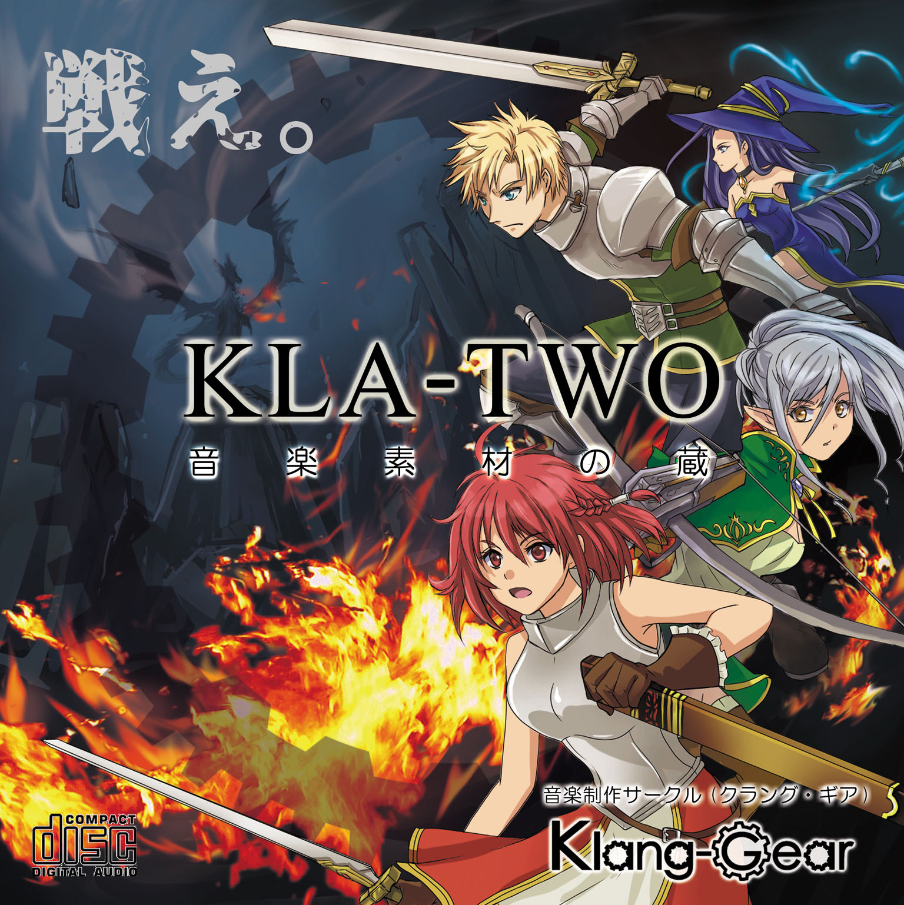

2019年10月リリース
「KLA-TWO」
音楽素材の蔵 Vol.2
目指すものは、聴ける！使える！カッコいい！
ナイスなバトル曲の提案。

Illustration by 鹿目悠人さん
KLA-TWOに関するニュース -
2019.0926
M3秋限定セール!！
M3秋当日に限り在庫ある分だけですが、
昨年の作品「KLA-ONE」(1,000円)を
お買上頂いたお客様は自動的に新作の
「KLA-TWO」(500円)をお付けします！
なお、KLA-ONEにはmatsumartinによる、
ゲーム、アニソン等のオムニバスアレンジCD
「KLARAGE」(クラレージュ)がおまけとして付属します。
昨年のM3秋に引き続き、今年も
オリジナルCDを制作します。
M3秋のブースは【え-32b】です！
今年ももぜ園(mozellさん）と
合体ブースにて、参加させていただいた
mozellさんの多アーティスト集合による
新作「フィールドオブざくアク」の
お手伝いと、自分の作品を展示致します！
嘘ついても仕方ないので正直言いますと
見事な過去ログ集になっております。
といっても、お気に入りの曲ばかりですので、
まぁまぁ期待してください。（笑）
ちなみに今作の音源はほとんどの音源を早期に
オープンにしていく計画があります。
つまりお客様はCD買っても買わなくても
聴けますよ、という事なのですが、
ぜひM3では皆さんに私の音楽に「出会う」を
楽しんで頂き、応援してやろうという方に
手にして頂ければ幸いです…！
今作のテーマは上の通り、
ロックのバトル向け音楽集です。
最近M3でもDTMというよりロックバンドや
ギタリストの方の出展が配信の手軽さもあって
増えてると思うのですが、ゲーム向けの
音楽に特化するロックなクリエイターさんは
少ない印象です。
今作ではmatsumartinの必殺技である
デジタルロックを味わって頂けるような
ナンバーを集めました。
説明臭くなってしまいますが、
私の音楽人生は、「ゲーム半分・バンド半分」
というちょっと変わった流れで形成されて
来ており、その経験が自分の創作に
大きく影響したと思います。
時にアドリブのようなソロがあったり、
プログレのテクニカルな所を取り入れたり、
ライブ感のある楽器の自己主張が
ごちゃごちゃ混じりあう感じが
私のオリジナリティだと思います。
また、DTMをしながらギターをだらだらと
10年ほどかけて練習して、いつの間にか
簡単な録音ならできるようになりました。
打ち込みも録音でも対応できるので、
今回の曲は味のある打ち込みギターと
生演奏のギターを両方楽しんでいただけます。
ただ初期なので音やら演奏レベルに改善の
余地ありな曲が多いのだが…（泣）
ぜひその辺りをmatsumartinの独自性として
楽しんで頂けたらありがたいです。
- 曲紹介 -
1.Fire Bird
・いきなり素材に向くのか怪しい
展開の激しい曲（笑）になってます。
イントロ・アウトロの長く重たいサウンドを
上手く使えれば迫力のシーンが演出できそう。
激しいカメラワークやシーンを伴うOPとか。
*ギター生演奏
2.Eden's Fire
・第一印象からのカッコよさを追求した
迫力重視のシンプルなロック。
動きの激しいバトルシーンなんかに
マッチしそうなスピード感！
*ギター生演奏
3.Time Requiem
ダンジョンとかを意識して作った
ミドルテンポの一曲。桜庭統さんぽい
オルガンとか（笑）そのあたり必聴。
とてもゲームっぽくて地味にお気に入り。
4.Seventh Sense
こちらもミドルテンポな戦闘風の1曲。
生音系のストリングスが暗くて重たいシーンに
合いそうな雰囲気を演出します。
ピンチっぽい感じの演出にもあいそう。
*ギター生演奏(ソロのみ）
5.Razed Nightpia
・ヤマハのMU90という古の機材で作った
非常に古い曲です。ダンサブルなリズムに
乗せたバトル曲で、激しいメロディが
テンションを上げる感じです。
スラップベースの音が古臭いけど
それがまたレトロに感じてイイかも（笑）
6.Justice Blade
こちらもテイルズとか桜庭統さんっぽい感じを
意識したアップテンポなバトル曲。
ザコからボスから使えるような
汎用的な雰囲気を目指しました。
エンカウント風なイントロもそのまま
イイ感じに使えるかと！
個人的には一番好きなナンバー。
7.RAIJIN Session
変拍子や多彩なソロパート満載のプログレ。
攻殻機動隊みたいなBGM感を出したくて
ファンクやソリッドな音作りを心掛けました。
そこそこ細かいところまで拘った1曲。
後半のシンセソロはsamlieさんの生演奏。
*ギター・一部シンセ生演奏
8.Call of the dawn
組曲風ロックでラスボス手前風な味わい（謎）
打ち込みギターソロの限界突破を目指した
昔の曲です。かつての埼玉最終兵器さんとかと
同じヤマハの機材、MU2000を使用してます。
MU2000友達だったジギルさんに
コラボ頂いた思い出深い曲です。その後
ジギルさんはモンストなどの商用音楽の
作曲家になられたプロ。昔交流がありました。
9.Arch To Your Image!
サビが明るい曲でどこかシューティングっぽい
雰囲気があるロックです。割と重たい曲を多く
選曲したので、最後は明るく終わろう。
メタルバンドのStratovariusの名曲
「hunting high and low」っていう
熱いクサいメロスピがモデルです（笑
以上の9曲をBGM素材として収録致します。
*作品の著作権は作曲者(matsumartin)に
帰属します。*購入いただいた方は
BGM素材として自由に使って頂けます。
*ループ対応素材のアドバイスなど
気軽に相談下さい。使って頂いた時には
報告を頂けると嬉しいです。
*使って頂いた映像、ゲーム作品等に
名前をクレジット(Klang-Gear又は
matsumartin)頂けると作品の
フォローアップをできる限りさせて頂きます。
*再販や有償配信、
ダウンロード販売は禁止です。
M3での販売後の在庫は、オンラインストア
(store.jp or booth)
、ダウンロード販売にて
継続を検討しております。
前述の通り、M3終了後、複数の曲を素材サイトに登録予定です。
頒布価格予定：500円
*CD-R(CMC-pro/台湾製
クレーム（音飛び、聴けないなど）が
ございましたら交換やデータ配布など
丁寧に対応させて頂きます。
宜しくお願いします！